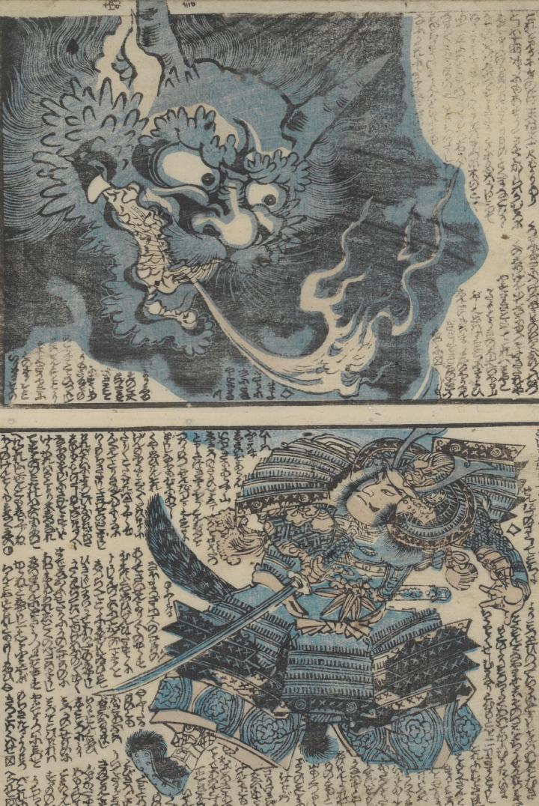

大鬼となり武士に襲い掛かる酒呑童子の首が描かれている。耳まで裂けた大きな口からは火を吐き出している。
著作者：一龍齋國久／出典：親書誌：U426_nichibunken_0431：頼光一代記圖繪／日付：2016／資源識別子：U426_nichibunken_0431_0010_0000
Copyright (c)2010- International Research Center for Japanese Studies, Kyoto, Japan. All rights reserved.